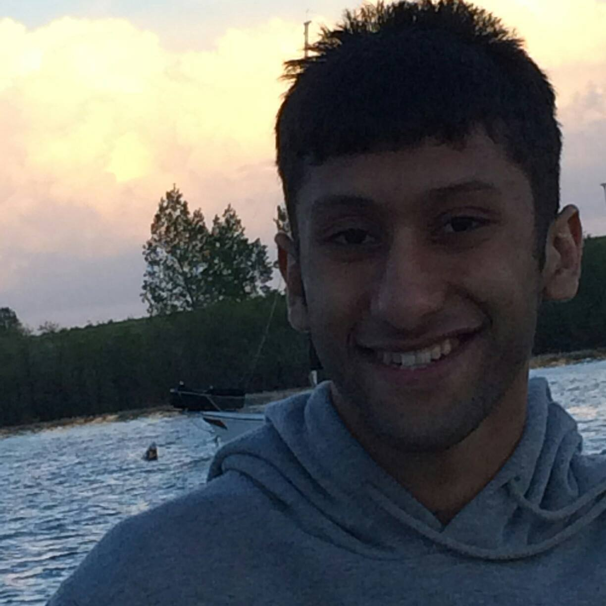
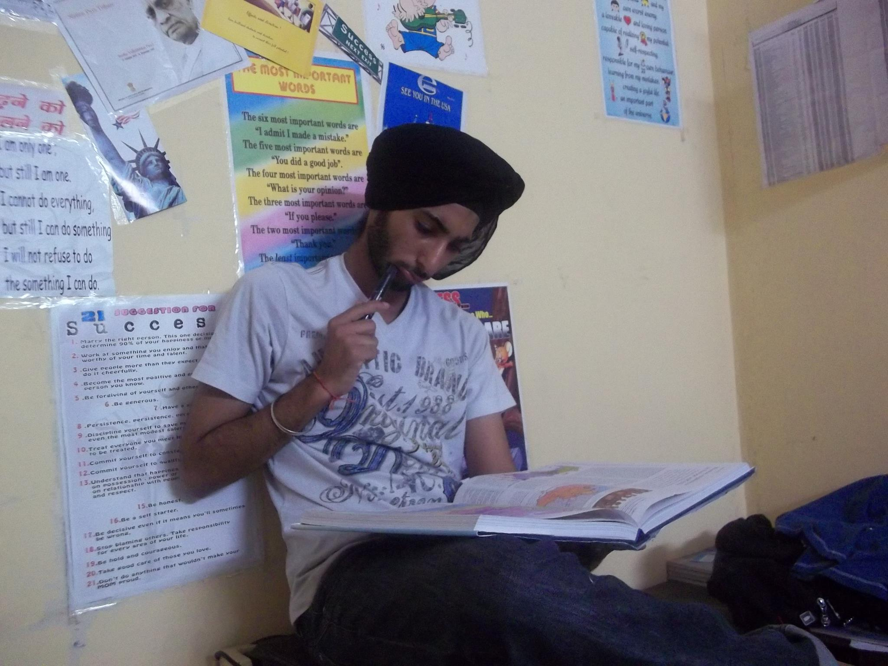

LIVE TUTORING
LIVE TUTORING
Find A Tutor:
Shambhavi Srivastava 
Bachelors in Broadcast News, UC Berkeley
Courses: Social Media Technology, Writing for the Electronic Media, Intro to Mass Communication
Immediate Vicinity: Hale Sciences, Center for Community
Experience: 20 years of experience teaching various subjects of broadcast news at the university level
Other Interests: Cooking, Dancing
I love tutoring because teaching has always been my passion since my student days, and LiveTutoring gives me the opportunity to pursue my passion.
 Yash Parekh 
Bachelors in Computer Science, UCSD
Courses: Intro to Programming, Data Structures, Algorithms
Immediate Vicinity: Engineering Center, University Memorial Center
Experience: I have had a few years of teaching experience with high school kids and community college students.
Other Interests: Gardening, Surfing
I love tutoring because it gives me an opportunity to connect with this generation.
 Jwalin Maniar
Jwalin Maniar
Bachelors in Forensic Science, UT Austin
Courses: Forsensic Microscopy, Forensic Chemistry
Immediate Vicinity: The Hill, Kittrege
Experience: I have five years of teaching experience with ages 15-20.
Other Interests: Cricket, Sleeping, Swimming
Teaching has always been my hobby. I am glad to tutor students in my spare time.
 Montek Thind
Bachelors in Business Administration, Cornell University
Courses: Intro to Finance, Business Law, Accounting
Immediate Vicinity: Koelbel, Fleming
Experience: I have five years of teaching experience with ages 15-20.
Other Interests: Weight Lifting, Cooking
It is wonderful to know that my knowledge is helpful to the students who are trying to pursue a career and build something for the future.